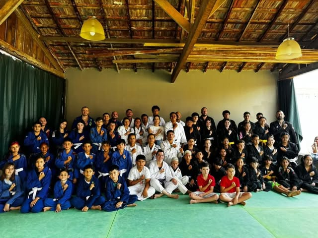
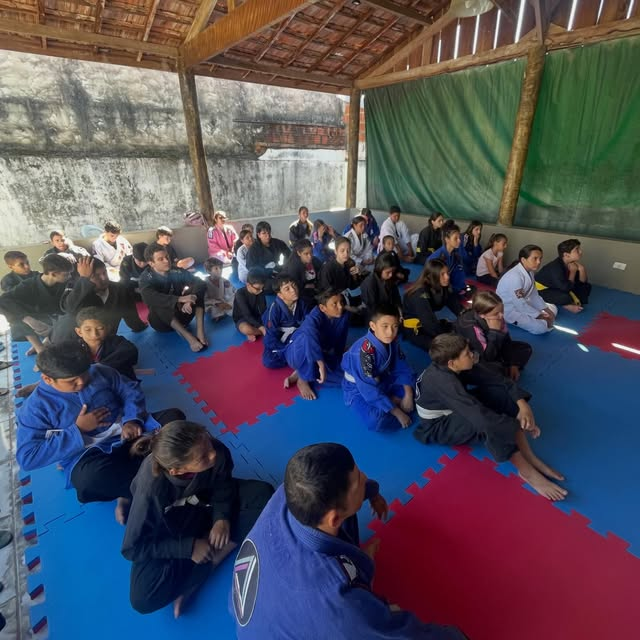
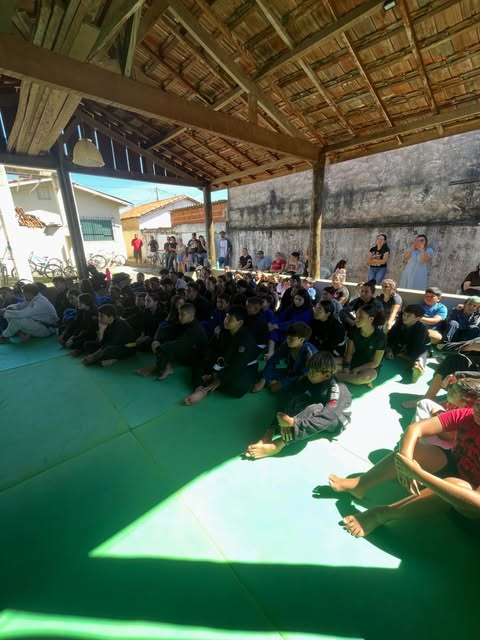
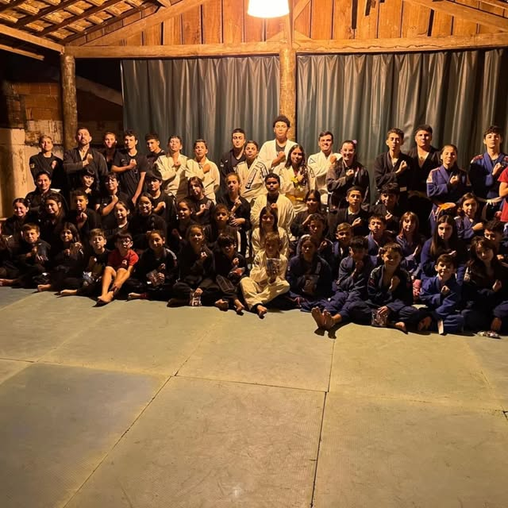
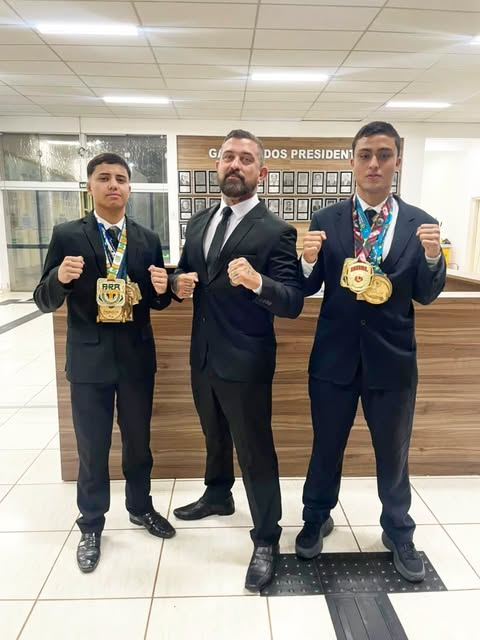

Projeto social · Rechan, Itapetininga-SP
JIU-JITSU
PARA QUEM PRECISA
Muito mais do que um esporte: uma oportunidade de transformar vidas. Aulas 100% gratuitas de Jiu-Jitsu para crianças, adolescentes e jovens do Distrito de Rechan, comandadas pelo faixa-preta Arnaldo Hungria.
Gratuito
Por semana
Anos de projeto
O projeto
Hungria Old School
Jiu-Jitsu

Meu nome é Arnaldo Hungria, sou faixa-preta de Jiu-Jitsu homologado pela Confederação Brasileira de Jiu-Jitsu (CBJJ) e construí minha trajetória no esporte conquistando diversos títulos ao longo dos anos. No entanto, minha maior conquista começou há mais de quatro anos, quando decidi levar tudo o que o Jiu-Jitsu me ensinou de volta às minhas origens.
Nascido e criado no Distrito de Rechan, em São Paulo, sempre acreditei que o esporte tem o poder de mudar destinos. Foi com esse propósito que fundei este projeto social, oferecendo aulas de Jiu-Jitsu totalmente gratuitas para crianças, adolescentes e jovens da comunidade.
Mais do que ensinar técnicas de luta, nosso objetivo é formar cidadãos. A cada treino, trabalhamos valores como respeito, disciplina, responsabilidade, humildade, perseverança e autocontrole. Queremos mostrar que existem caminhos diferentes, onde o esforço, a dedicação e o caráter são as maiores vitórias.
Ao longo dessa jornada, tivemos a alegria de ver nossos alunos ultrapassarem todas as expectativas. O projeto já revelou campeões paulistas, campeões brasileiros e também um campeão sul-americano, provando que talento, quando encontra oportunidade, pode alcançar qualquer lugar.
Entretanto, para nós, as medalhas são apenas uma consequência. O verdadeiro sucesso está em cada jovem que encontra no tatame um ambiente seguro para crescer, fazer amizades, desenvolver autoestima e construir um futuro melhor, longe da violência, das drogas e de qualquer influência negativa.
Este projeto existe graças à paixão pelo esporte e ao compromisso com a nossa comunidade. Cada aluno que veste o kimono representa uma nova esperança e reforça nossa missão de utilizar o Jiu-Jitsu como uma poderosa ferramenta de transformação social.
Acreditamos que um tatame pode ser muito mais do que um local de treinamento. Ele pode ser um lugar onde sonhos começam, caráter é moldado e vidas são transformadas.
Seja bem-vindo ao nosso projeto. Aqui, formamos muito mais do que atletas. Formamos cidadãos.
No tatame
Nosso dia a dia




Resultado no tatame
Conquistas do projeto
Campeões
Paulistas
Alunos formados na base do HOS conquistando títulos em campeonatos de São Paulo.
Campeões
Brasileiros
Jovens de Rechan representando o projeto nos principais campeonatos do Brasil.
Campeão
Sul-Americano
Resultado que coloca o interior paulista no mapa do Jiu-Jitsu sul-americano.
FAIXA PRETA · CBJJ
Quem ensina
Arnaldo Hungria
Faixa preta de Jiu-Jitsu homologado pela Confederação Brasileira de Jiu-Jitsu (CBJJ), Arnaldo nasceu e foi criado no Distrito de Rechan, interior de São Paulo.
Há mais de quatro anos, decidiu transformar sua trajetória no esporte em oportunidade para a comunidade onde cresceu, fundando o HOS Jiu-Jitsu e dedicando parte da semana a ensinar, de graça, a próxima geração de atletas de Rechan.
Onde e quando
Horários de treino
Aulas gratuitas toda quarta-feira. Vagas abertas pra crianças, adolescentes e jovens da região. Pra confirmar e trazer seu filho pra conhecer o projeto, chama a gente no WhatsApp.
Onde treinamos
Localização
Endereço:
Rua Joaquim Felicio de Oliveira, 121
Rechan - Itapetininga-SP
Fale com a gente